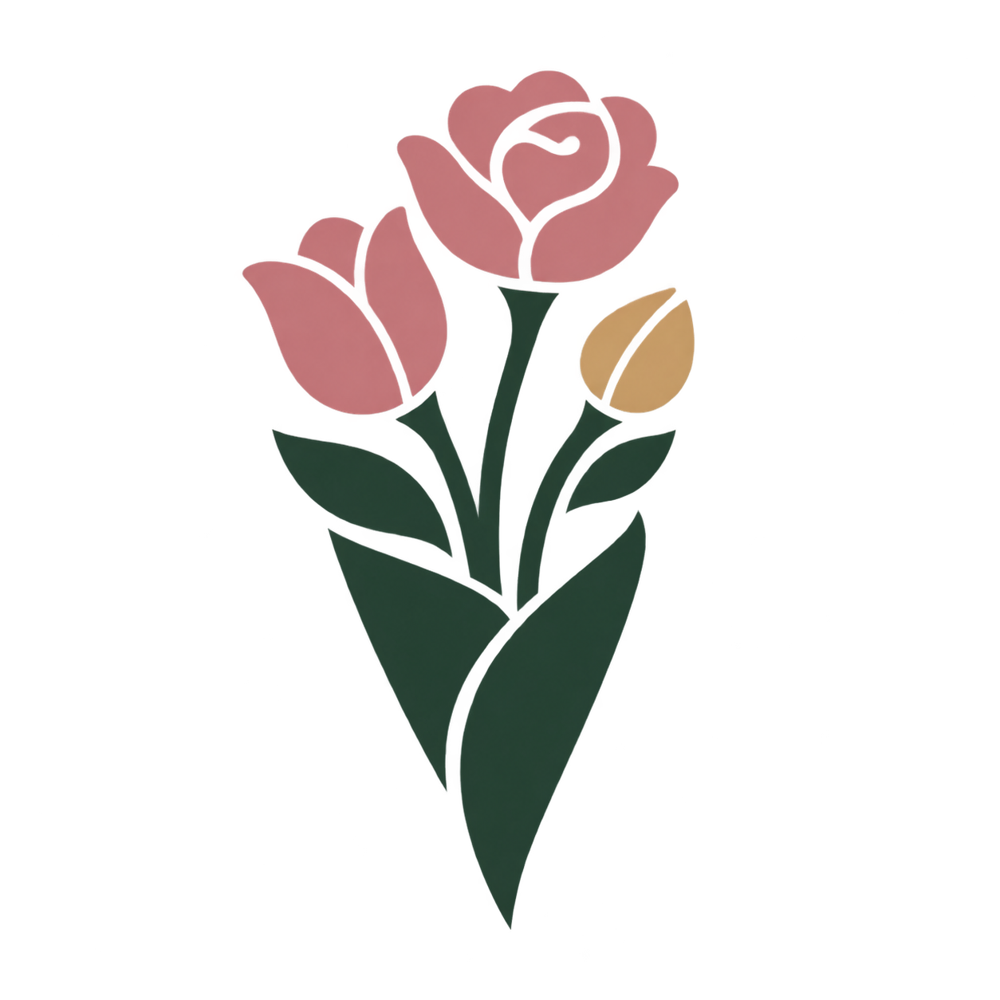

亲手搭配，慢慢找到感觉
旋转查看立体花束，逐枝调整位置、高低和角度，修剪支持的茎叶。让颜色与层次在一次次尝试中变成自己的选择。
留一点时间，给喜欢的花
A Moment in Bloom
把心意，慢慢做成一束花。
在一间温暖的花艺工作室里，从第一枝花开始，挑选颜色、调整高低、搭配枝叶，再包上纸、系好丝带、写一张卡片。为自己做一束喜欢的花，也为一封来信做一份心意。
进入花艺工作室 →
旋转查看立体花束，逐枝调整位置、高低和角度，修剪支持的茎叶。让颜色与层次在一次次尝试中变成自己的选择。
随心做花，或接下一封生日、乔迁、纪念日的来信。从花材到卡片，把顾客的小小愿望做进成品里。
选择纸包、花瓶或陶罐，搭配丝带和卡片，再选一处光线拍照。同一作品可拍多张照片，存进本机相册，或导出图片。